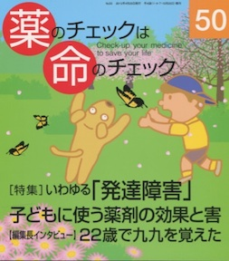

No.50 [特集] いわゆる「発達障害」 子どもに使う薬剤の効果と害 2013年4月 発行
少年事件の加害者が「発達障害」をもっていると報道されるとき、
「障害」ゆえに「事件」を引き起こした、
「障害」があると「事件」を起こすのではないか、
というような誤解と錯覚を人々に与えてしまう表現があります。
それは「障害」なのでしょうか？
そもそも「発達障害」って、何？
そういう思いから、今号のタイトルを
――いわゆる「発達障害」――としました。
できれば、非定型発達という用語を使いたかったのですが、
それでは「発達障害」を取り上げたものだということに
気づいてもらえないかもしれませんし。
もくじ
Main Feature 特集 いわゆる「発達障害」
■ 特集を読む、その前に… 編集部
■ 「注意欠陥多動性障害」とは その変遷、診断、現状 清水 誠
■ つまづいてもやりなおせる ゆとりのある社会を 川崎ちぐさ
《編集長インタビュー》
■ 22歳で九九を覚えた 編集部
《新・市民の視点》
■ くすりは最小限に②発達障害について 春本幸子
「発達障害」者を選別、排除する
■ 「発達障害」者支援法 梅田忠斉
害のほうが大きい
■ 子どもに向精神薬剤は使わないで 浜 六郎
Second Feature 第2特集
不眠・不安・うつの薬 PART2
■ 病気を診ずして、病人を診よ 斉尾武郎
■ コラム：うつ病と薬剤について 浜 六郎
Topic トピック
■ リリカ（一般名プレガバリン）の有効性と安全性を評価する 安田能暢
Series 連載
■ 医師国家試験に挑戦しよう！⑯ 木元康介
■ コーヒー無礼区 坂口啓子
■ リレーエッセイ 身の回りの小さな発見 八幡 啓
■ 医師国家試験の解答と解説
■ みんなのやさしい生命倫理(50) 生老病死⑳ 谷田憲俊
Others
■ 質問箱 インフルエンザワクチンの接種に悩む
抗インフルエンザ剤による獲得免疫抑制について
■ 読者の声
■ 書評
■ バックナンバー一覧 / 書籍申込用紙
■ 編集後記/奥付